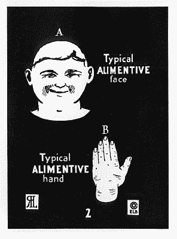
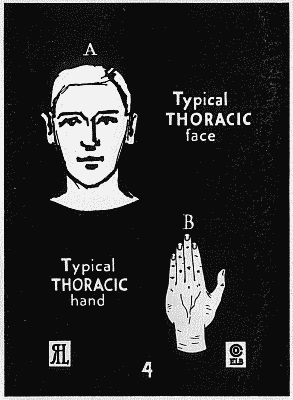
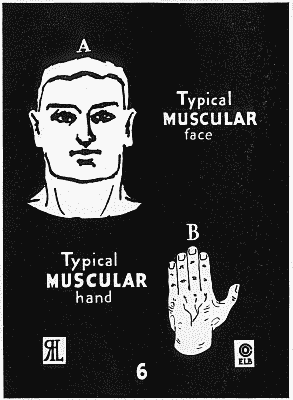
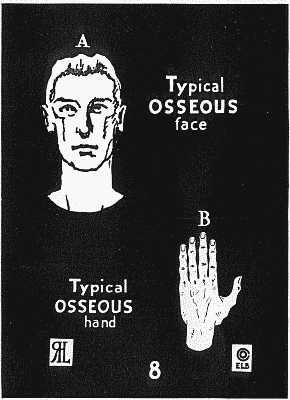
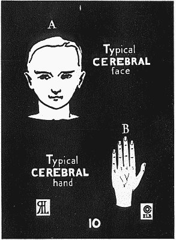

<!DOCTYPE html>
<html lang="en">
<head>
  <meta charset="UTF-8">
  <meta name="viewport" content="width=device-width, initial-scale=1.0">
  <title>The Five Human Hand Types · Morphological Analysis on Sight (Benedict 1921 &amp; Sloan 5:1)</title>
  <link rel="stylesheet" href="fonts.css">
  <style>
    :root {
      --bg: #070b12;
      --card-bg: #0d1522;
      --card-border: #1e293b;
      --text: #f8fafc;
      --text-muted: #94a3b8;
      --alim: #f59e0b;
      --thor: #ec4899;
      --musc: #06b6d4;
      --oss: #10b981;
      --cere: #8b5cf6;
      --accent: #38bdf8;
    }

    * { box-sizing: border-box; margin: 0; padding: 0; }
    body {
      background: var(--bg);
      color: var(--text);
      font-family: 'PocketGull Fineliner', system-ui, -apple-system, sans-serif;
      line-height: 1.6;
      padding-bottom: 5rem;
    }

    /* Top Navbar */
    .top-nav {
      position: sticky;
      top: 0;
      z-index: 50;
      background: rgba(7, 11, 18, 0.92);
      backdrop-filter: blur(12px);
      border-bottom: 1px solid var(--card-border);
      padding: 0.75rem 2rem;
      display: flex;
      justify-content: space-between;
      align-items: center;
    }
    .brand {
      display: flex;
      align-items: center;
      gap: 0.6rem;
      font-size: 1.1rem;
      font-weight: 700;
      color: var(--text);
      text-decoration: none;
    }
    .brand-badge {
      background: rgba(56, 189, 248, 0.15);
      color: var(--accent);
      border: 1px solid rgba(56, 189, 248, 0.3);
      padding: 0.15rem 0.5rem;
      border-radius: 999px;
      font-size: 0.75rem;
      font-family: 'PocketGull Mono', monospace;
    }
    .nav-links {
      display: flex;
      gap: 1rem;
      align-items: center;
    }
    .nav-btn {
      color: var(--text-muted);
      text-decoration: none;
      font-size: 0.88rem;
      padding: 0.4rem 0.8rem;
      border-radius: 6px;
      border: 1px solid transparent;
      transition: all 0.2s ease;
      display: inline-flex;
      align-items: center;
      gap: 0.4rem;
    }
    .nav-btn:hover {
      color: var(--text);
      border-color: var(--card-border);
      background: rgba(255, 255, 255, 0.04);
    }
    .nav-btn.active {
      color: var(--accent);
      border-color: rgba(56, 189, 248, 0.4);
      background: rgba(56, 189, 248, 0.1);
    }

    /* Hero Section */
    .hero {
      max-width: 1100px;
      margin: 2rem auto 1.5rem;
      padding: 0 1.5rem;
      text-align: center;
    }
    .hero-pill {
      display: inline-flex;
      align-items: center;
      gap: 0.5rem;
      padding: 0.35rem 0.9rem;
      background: rgba(6, 182, 212, 0.12);
      border: 1px solid rgba(6, 182, 212, 0.3);
      border-radius: 999px;
      font-size: 0.85rem;
      color: #38bdf8;
      margin-bottom: 1rem;
      font-family: 'PocketGull Mono', monospace;
    }
    .hero h1 {
      font-family: 'PocketGull Bold', sans-serif;
      font-size: 2.75rem;
      letter-spacing: -0.02em;
      margin-bottom: 0.8rem;
      line-height: 1.2;
    }
    .hero h1 span {
      background: linear-gradient(135deg, #38bdf8, #818cf8);
      -webkit-background-clip: text;
      -webkit-text-fill-color: transparent;
    }
    .hero p {
      max-width: 820px;
      margin: 0 auto;
      font-size: 1.1rem;
      color: var(--text-muted);
    }

    /* Main Container */
    .container {
      max-width: 1200px;
      margin: 0 auto;
      padding: 0 1.5rem;
    }

    /* Top Mode Switcher */
    .view-controls {
      display: flex;
      justify-content: center;
      gap: 0.75rem;
      flex-wrap: wrap;
      margin: 1.5rem 0 2rem;
    }
    .view-tab {
      padding: 0.6rem 1.25rem;
      border-radius: 8px;
      border: 1px solid var(--card-border);
      background: var(--card-bg);
      color: var(--text-muted);
      font-size: 0.92rem;
      cursor: pointer;
      display: flex;
      align-items: center;
      gap: 0.5rem;
      font-weight: 500;
      transition: all 0.2s;
    }
    .view-tab:hover {
      border-color: #334155;
      color: var(--text);
    }
    .view-tab.active {
      background: rgba(56, 189, 248, 0.15);
      border-color: var(--accent);
      color: var(--accent);
      font-weight: 600;
    }

    .perspective-panel { display: none; }
    .perspective-panel.active { display: block; animation: fadeIn 0.25s ease-out; }
    @keyframes fadeIn {
      from { opacity: 0; transform: translateY(6px); }
      to { opacity: 1; transform: translateY(0); }
    }

    /* Type Tab Selector */
    .type-tabs {
      display: grid;
      grid-template-columns: repeat(auto-fit, minmax(200px, 1fr));
      gap: 0.75rem;
      margin-bottom: 1.75rem;
    }
    .type-btn {
      padding: 0.85rem 1rem;
      background: var(--card-bg);
      border: 1px solid var(--card-border);
      border-radius: 10px;
      color: var(--text);
      cursor: pointer;
      text-align: left;
      transition: all 0.2s;
      display: flex;
      flex-direction: column;
      gap: 0.25rem;
    }
    .type-btn:hover {
      transform: translateY(-2px);
      box-shadow: 0 4px 12px rgba(0, 0, 0, 0.3);
    }
    .type-btn.active { border-width: 2px; }
    .type-btn.alimentive.active { border-color: var(--alim); background: rgba(245, 158, 11, 0.1); }
    .type-btn.thoracic.active   { border-color: var(--thor); background: rgba(236, 72, 153, 0.1); }
    .type-btn.muscular.active   { border-color: var(--musc); background: rgba(6, 182, 212, 0.1); }
    .type-btn.osseous.active    { border-color: var(--oss);  background: rgba(16, 185, 129, 0.1); }
    .type-btn.cerebral.active   { border-color: var(--cere); background: rgba(139, 92, 246, 0.1); }

    .type-badge-row {
      display: flex;
      justify-content: space-between;
      align-items: center;
    }
    .type-name { font-weight: 700; font-size: 1rem; }
    .type-shape-pill {
      font-size: 0.75rem;
      padding: 0.1rem 0.4rem;
      border-radius: 4px;
      font-family: 'PocketGull Mono', monospace;
    }
    .type-subtitle { font-size: 0.82rem; color: var(--text-muted); }

    /* Telemetry & Perspective Controls Toolbar */
    .canvas-toolbar {
      display: flex;
      justify-content: space-between;
      align-items: center;
      gap: 1rem;
      background: #090d16;
      border: 1px solid var(--card-border);
      border-radius: 10px 10px 0 0;
      padding: 0.75rem 1.25rem;
      flex-wrap: wrap;
    }
    .toolbar-group {
      display: flex;
      align-items: center;
      gap: 0.5rem;
      flex-wrap: wrap;
    }
    .toolbar-label {
      font-size: 0.78rem;
      text-transform: uppercase;
      font-family: 'PocketGull Mono', monospace;
      color: var(--text-muted);
      letter-spacing: 0.5px;
    }
    .tool-toggle-btn {
      background: var(--card-bg);
      border: 1px solid var(--card-border);
      color: var(--text-muted);
      padding: 0.35rem 0.7rem;
      border-radius: 6px;
      font-size: 0.8rem;
      cursor: pointer;
      display: inline-flex;
      align-items: center;
      gap: 0.35rem;
      transition: all 0.2s;
    }
    .tool-toggle-btn:hover {
      border-color: #475569;
      color: var(--text);
    }
    .tool-toggle-btn.active {
      background: rgba(56, 189, 248, 0.15);
      border-color: var(--accent);
      color: var(--accent);
      font-weight: 600;
    }

    /* Inspector Stage Grid */
    .inspector-stage-wrap {
      background: var(--card-bg);
      border: 1px solid var(--card-border);
      border-top: none;
      border-radius: 0 0 14px 14px;
      padding: 1.5rem;
      margin-bottom: 2rem;
      display: grid;
      grid-template-columns: 1fr 1fr;
      gap: 2rem;
      align-items: start;
    }
    @media (max-width: 900px) {
      .inspector-stage-wrap { grid-template-columns: 1fr; }
    }

    /* Canvas Stage */
    .canvas-stage {
      background: #070a12;
      border: 1px solid var(--card-border);
      border-radius: 10px;
      padding: 1rem;
      position: relative;
      display: flex;
      flex-direction: column;
      align-items: center;
      justify-content: center;
      min-height: 480px;
    }
    .canvas-stage.split-mode {
      display: grid;
      grid-template-columns: 1fr 1fr;
      gap: 1rem;
    }
    .archival-split-box {
      display: none;
      flex-direction: column;
      align-items: center;
      justify-content: center;
      background: #000;
      border: 1px solid #334155;
      border-radius: 8px;
      padding: 0.75rem;
      height: 100%;
    }
    .archival-split-box img {
      max-width: 100%;
      max-height: 420px;
      object-fit: contain;
      border-radius: 4px;
    }
    .archival-split-caption {
      font-size: 0.78rem;
      color: var(--text-muted);
      margin-top: 0.5rem;
      font-family: 'PocketGull Mono', monospace;
    }

    .canvas-stage svg {
      width: 100%;
      max-width: 480px;
      height: auto;
    }

    /* Step Slider Module */
    .step-slider-module {
      margin-top: 1.25rem;
      width: 100%;
      background: #090d16;
      border: 1px solid var(--card-border);
      border-radius: 8px;
      padding: 1rem 1.25rem;
    }
    .slider-header {
      display: flex;
      justify-content: space-between;
      align-items: center;
      margin-bottom: 0.75rem;
    }
    .slider-title {
      font-size: 0.85rem;
      font-weight: 700;
      color: var(--text);
      display: flex;
      align-items: center;
      gap: 0.4rem;
    }
    .slider-step-badge {
      font-size: 0.78rem;
      font-family: 'PocketGull Mono', monospace;
      color: var(--accent);
      background: rgba(56, 189, 248, 0.12);
      border: 1px solid rgba(56, 189, 248, 0.3);
      padding: 0.15rem 0.5rem;
      border-radius: 4px;
    }
    .phase-range {
      width: 100%;
      accent-color: var(--accent);
      cursor: pointer;
    }
    .phase-ticks {
      display: flex;
      justify-content: space-between;
      margin-top: 0.4rem;
      font-size: 0.75rem;
      color: var(--text-muted);
      font-family: 'PocketGull Mono', monospace;
    }
    .phase-desc {
      font-size: 0.85rem;
      color: #cbd5e1;
      margin-top: 0.5rem;
      border-top: 1px solid rgba(255, 255, 255, 0.06);
      padding-top: 0.5rem;
    }

    /* Details Panel */
    .details-panel {
      display: flex;
      flex-direction: column;
      gap: 1.25rem;
    }
    .details-header {
      border-bottom: 1px solid var(--card-border);
      padding-bottom: 1rem;
    }
    .details-header h2 {
      font-family: 'PocketGull Bold', sans-serif;
      font-size: 1.85rem;
      margin-bottom: 0.25rem;
    }
    .meta-tags {
      display: flex;
      gap: 0.5rem;
      flex-wrap: wrap;
      font-size: 0.82rem;
      font-family: 'PocketGull Mono', monospace;
      color: var(--text-muted);
    }
    .meta-pill {
      background: rgba(255, 255, 255, 0.05);
      border: 1px solid var(--card-border);
      padding: 0.15rem 0.5rem;
      border-radius: 4px;
    }

    .diagnoses-list {
      list-style: none;
      display: flex;
      flex-direction: column;
      gap: 0.5rem;
    }
    .diagnoses-list li {
      position: relative;
      padding-left: 1.4rem;
      font-size: 0.92rem;
    }
    .diagnoses-list li::before {
      content: "➔";
      position: absolute;
      left: 0;
      color: var(--accent);
      font-size: 0.8rem;
    }

    .quote-card {
      background: rgba(15, 23, 42, 0.7);
      border-left: 3px solid var(--accent);
      padding: 1rem 1.25rem;
      border-radius: 0 8px 8px 0;
      font-size: 0.9rem;
      font-style: italic;
      color: #cbd5e1;
    }
    .quote-card .cite {
      display: block;
      margin-top: 0.5rem;
      font-size: 0.76rem;
      font-style: normal;
      color: var(--text-muted);
      font-family: 'PocketGull Mono', monospace;
    }

    .hci-card {
      background: rgba(56, 189, 248, 0.08);
      border: 1px solid rgba(56, 189, 248, 0.25);
      border-radius: 8px;
      padding: 1rem 1.25rem;
      font-size: 0.9rem;
    }
    .hci-card strong {
      color: var(--accent);
      display: flex;
      align-items: center;
      gap: 0.4rem;
      margin-bottom: 0.35rem;
      font-family: 'PocketGull Bold', sans-serif;
    }

    /* Comparison Table */
    .comparison-table-wrap {
      background: var(--card-bg);
      border: 1px solid var(--card-border);
      border-radius: 12px;
      overflow-x: auto;
      margin-bottom: 3rem;
    }
    .comparison-table {
      width: 100%;
      border-collapse: collapse;
      font-size: 0.9rem;
      text-align: left;
    }
    .comparison-table th, .comparison-table td {
      padding: 1rem 1.2rem;
      border-bottom: 1px solid var(--card-border);
    }
    .comparison-table th {
      background: rgba(15, 23, 42, 0.9);
      color: #cbd5e1;
      font-family: 'PocketGull Mono', monospace;
      font-size: 0.8rem;
      text-transform: uppercase;
      letter-spacing: 0.5px;
    }
    .comparison-table tr:hover td { background: rgba(255, 255, 255, 0.02); }

    /* Historical Plates Grid */
    .plates-grid {
      display: grid;
      grid-template-columns: repeat(auto-fit, minmax(200px, 1fr));
      gap: 1.5rem;
      margin-top: 1.5rem;
    }
    .plate-card {
      background: var(--card-bg);
      border: 1px solid var(--card-border);
      border-radius: 10px;
      padding: 1rem;
      text-align: center;
    }
    .plate-card img {
      width: 100%;
      height: auto;
      border-radius: 6px;
      border: 1px solid #334155;
      background: #000;
      margin-bottom: 0.75rem;
    }
    .plate-title { font-weight: 700; font-size: 0.95rem; margin-bottom: 0.25rem; }
    .plate-desc { font-size: 0.8rem; color: var(--text-muted); }

    /* Footer */
    footer {
      text-align: center;
      padding: 2.5rem 1rem 1rem;
      border-top: 1px solid var(--card-border);
      color: var(--text-muted);
      font-size: 0.85rem;
    }
  </style>
</head>
<body>

  <!-- Top Sticky Navigation -->
  <nav class="top-nav">
    <a href="index.html" class="brand">
      <span>PocketGull</span>
      <span class="brand-badge">5 Hand Types</span>
    </a>
    <div class="nav-links">
      <a href="asl_studio.html" class="nav-btn">🤟 Sign Studio</a>
      <a href="index.html" class="nav-btn">🏛️ Font Foundry</a>
      <a href="https://www.gutenberg.org/ebooks/30601" target="_blank" class="nav-btn">📖 Gutenberg #30601</a>
    </div>
  </nav>

  <!-- Hero Header -->
  <header class="hero">
    <div class="hero-pill">
      <span>📐 Dieter Rams &amp; Louise Sloan 5:1 Acuity Invariant</span>
    </div>
    <h1>The Five Human <span>Hand Types</span></h1>
    <p>
      An anatomical, biometric, and optometric investigation based on Elsie Lincoln Benedict &amp; Ralph Paine Benedict's
      <em>How to Analyze People on Sight</em> (1921), illustrated by Raymond H. Lufkin.
      Dissecting underlying geometric primitives, proportion ratios, lateral joint profiles, and Louise Sloan 5:1 optotype telemetry.
    </p>
  </header>

  <!-- Mode Selector Tabs -->
  <div class="view-controls">
    <button class="view-tab active" data-target="panel-deepdive">
      <span>🖐️ Interactive Hand Model Studio</span>
    </button>
    <button class="view-tab" data-target="panel-diagnostic">
      <span>🔬 The Benedict Diagnostic Rule (Joint Profiles)</span>
    </button>
    <button class="view-tab" data-target="panel-sloan">
      <span>🎯 Louise Sloan 5:1 ASL Acuity Test</span>
    </button>
    <button class="view-tab" data-target="panel-turntable" id="tabTurntable">
      <span>🌐 3D Volumetric Turntable &amp; Kinematics</span>
    </button>
    <button class="view-tab" data-target="panel-historical">
      <span>📜 1921 Original Archival Plates (Lufkin)</span>
    </button>
  </div>

  <main class="container">

    <!-- PANEL 1: INTERACTIVE HAND MODEL STUDIO -->
    <section id="panel-deepdive" class="perspective-panel active">
      
      <!-- Type Selectors -->
      <div class="type-tabs">
        <button class="type-btn alimentive active" data-type="alimentive">
          <div class="type-badge-row">
            <span class="type-name" style="color: var(--alim);">1. Alimentive</span>
            <span class="type-shape-pill" style="background: rgba(245,158,11,0.2); color: var(--alim);">Circle</span>
          </div>
          <span class="type-subtitle">The Plump / Dimpled Hand</span>
        </button>

        <button class="type-btn thoracic" data-type="thoracic">
          <div class="type-badge-row">
            <span class="type-name" style="color: var(--thor);">2. Thoracic</span>
            <span class="type-shape-pill" style="background: rgba(236,72,153,0.2); color: var(--thor);">Wedge</span>
          </div>
          <span class="type-subtitle">The Pointed / Long Middle</span>
        </button>

        <button class="type-btn muscular" data-type="muscular">
          <div class="type-badge-row">
            <span class="type-name" style="color: var(--musc);">3. Muscular</span>
            <span class="type-shape-pill" style="background: rgba(6,182,212,0.2); color: var(--musc);">Square</span>
          </div>
          <span class="type-subtitle">The Spatulate / Craftsman Hand</span>
        </button>

        <button class="type-btn osseous" data-type="osseous">
          <div class="type-badge-row">
            <span class="type-name" style="color: var(--oss);">4. Osseous</span>
            <span class="type-shape-pill" style="background: rgba(16,185,129,0.2); color: var(--oss);">Oblong</span>
          </div>
          <span class="type-subtitle">The Knotty / Endurance Hand</span>
        </button>

        <button class="type-btn cerebral" data-type="cerebral">
          <div class="type-badge-row">
            <span class="type-name" style="color: var(--cere);">5. Cerebral</span>
            <span class="type-shape-pill" style="background: rgba(139,92,246,0.2); color: var(--cere);">Triangle</span>
          </div>
          <span class="type-subtitle">The Smooth / Thinker Hand</span>
        </button>
      </div>

      <!-- Canvas Toolbar: Perspectives & Overlay Toggles -->
      <div class="canvas-toolbar">
        <!-- Perspective Selector -->
        <div class="toolbar-group">
          <span class="toolbar-label">Perspective:</span>
          <button type="button" class="tool-toggle-btn active" data-perspective="dorsal">🖐️ Dorsal (Back)</button>
          <button type="button" class="tool-toggle-btn" data-perspective="palmar">🤲 Palmar (Front)</button>
          <button type="button" class="tool-toggle-btn" data-perspective="lateral">📐 Lateral Profile</button>
          <button type="button" class="tool-toggle-btn" data-perspective="threeQuarter">🔄 3/4 Perspective</button>
        </div>

        <!-- Telemetry Layer Toggles -->
        <div class="toolbar-group">
          <span class="toolbar-label">Overlays:</span>
          <button type="button" class="tool-toggle-btn" id="togglePrimitivesBtn">🔲 Primitives</button>
          <button type="button" class="tool-toggle-btn" id="toggleRatiosBtn">📏 Ratios</button>
          <button type="button" class="tool-toggle-btn" id="toggleSloanBtn">🎯 Sloan 5:1 Grid</button>
          <button type="button" class="tool-toggle-btn" id="toggleInsetBtn">🔬 Lateral Inset</button>
          <button type="button" class="tool-toggle-btn" id="toggleArchivalSplitBtn">📜 1921 Archival Split</button>
          <button type="button" class="tool-toggle-btn" id="toggleArchivalGhostBtn" title="Superimpose 1921 Lufkin Lithograph as translucent ghost tracing layer">👻 1921 Ghost Trace</button>
          <div id="ghostOpacityWrap" style="display: none; align-items: center; gap: 0.35rem; margin-left: 4px;">
            <span style="font-size: 0.72rem; color: var(--text-muted); font-family: monospace;">Opacity:</span>
            <input type="range" id="ghostOpacitySlider" min="0.1" max="1.0" step="0.05" value="0.45" style="width: 70px; accent-color: var(--accent); cursor: pointer;">
            <span id="ghostOpacityVal" style="font-size: 0.72rem; color: var(--accent); font-family: monospace;">45%</span>
          </div>
        </div>
      </div>

      <!-- Main Stage -->
      <div class="inspector-stage-wrap">
        
        <!-- Left: Canvas Stage & Slider -->
        <div>
          <div class="canvas-stage" id="canvasStage">
            <!-- 1921 Ghost Overlay for Precision Tracing & Registration -->
            <div id="archivalGhostOverlay" style="position: absolute; inset: 0; display: none; justify-content: center; align-items: center; pointer-events: none; opacity: 0.45; z-index: 1;">
              
            </div>
            <!-- Vector Canvas -->
            <div id="vectorCanvasWrap" style="width: 100%; display: flex; justify-content: center; position: relative; z-index: 2;">
              <!-- SVG dynamically injected -->
            </div>
            <!-- Archival Split Plate (Shown when split mode enabled) -->
            <div class="archival-split-box" id="archivalSplitBox">
              
              <div class="archival-split-caption" id="archivalPlateCaption">Chart 2 (Page 40) · Raymond H. Lufkin (1921)</div>
            </div>
          </div>

          <!-- 4-Phase Drawing Step Slider -->
          <div class="step-slider-module">
            <div class="slider-header">
              <span class="slider-title">🎨 Interactive Drawing Step-by-Step</span>
              <span class="slider-step-badge" id="sliderStepBadge">Phase 4: Terminals &amp; Details</span>
            </div>
            <input type="range" min="1" max="4" value="4" step="1" class="phase-range" id="drawingPhaseRange">
            <div class="phase-ticks">
              <span>1. Mass</span>
              <span>2. Primitives</span>
              <span>3. Flesh</span>
              <span>4. Details</span>
            </div>
            <div class="phase-desc" id="phaseDescText">
              <strong>Phase 4 (Terminals &amp; Details):</strong> Final anatomical layer with articulated nail plates (cuticle curve, lunula, free edge), knuckle dimples/knots, extensor tendons, and skin creases.
            </div>
          </div>
        </div>

        <!-- Right: Diagnostic Details & Quotes -->
        <div class="details-panel">
          <div class="details-header">
            <h2 id="inspectName">The Alimentive Hand</h2>
            <div class="meta-tags">
              <span class="meta-pill" id="inspectChart">Chart 2 (Page 40)</span>
              <span class="meta-pill" id="inspectSystem">Digestive Dominant</span>
              <span class="meta-pill" id="inspectGeom">Circle Archetype</span>
            </div>
          </div>

          <div>
            <h4 style="font-size: 0.85rem; text-transform: uppercase; color: var(--text-muted); margin-bottom: 0.5rem; letter-spacing: 0.5px;">
              Diagnostic Morphological Criteria
            </h4>
            <ul class="diagnoses-list" id="inspectDiagnoses">
              <!-- Injected by JS -->
            </ul>
          </div>

          <div class="quote-card" id="inspectQuoteBox">
            <p id="inspectQuote">"Because his bones are small the pure Alimentive has small feet and small hands..."</p>
            <span class="cite">— Elsie Lincoln Benedict &amp; Ralph Paine Benedict (1921), How to Analyze People on Sight</span>
          </div>

          <div class="hci-card">
            <strong><span>👁️</span> Modern HCI &amp; Louise Sloan 5:1 Optotype Telemetry:</strong>
            <p id="inspectHci" style="color: #cbd5e1; font-size: 0.88rem;">
              High contour occlusion. In optical hand tracking and Sloan 5:1 optotype rendering, fatty tissues obscure finger gaps...
            </p>
          </div>

          <div style="background: #090d16; border: 1px solid var(--card-border); border-radius: 8px; padding: 0.85rem 1.25rem;">
            <div style="font-size: 0.8rem; font-family: 'PocketGull Mono', monospace; color: var(--text-muted); text-transform: uppercase;">
              Biometric Dimension Telemetry
            </div>
            <div style="display: grid; grid-template-columns: 1fr 1fr; gap: 0.75rem; margin-top: 0.5rem; font-size: 0.85rem;">
              <div>
                <span style="color: var(--text-muted);">Palm : Finger Ratio:</span>
                <strong id="ratioFinger" style="display: block; color: var(--accent);">1 : 0.78</strong>
              </div>
              <div>
                <span style="color: var(--text-muted);">Wrist : Knuckle Width:</span>
                <strong id="ratioWrist" style="display: block; color: var(--accent);">0.92 : 1.00</strong>
              </div>
            </div>
          </div>

          <!-- Direct Hand Model Bridge to ASL Practice Studio -->
          <a id="btnPracticeInStudio" href="asl_studio.html?model=alimentive" style="display: flex; align-items: center; justify-content: center; gap: 0.6rem; background: linear-gradient(135deg, rgba(6, 182, 212, 0.15), rgba(129, 140, 248, 0.22)); border: 1px solid rgba(56, 189, 248, 0.4); color: #38bdf8; padding: 0.85rem 1.25rem; border-radius: 8px; font-weight: 700; text-decoration: none; font-size: 0.92rem; transition: all 0.2s; box-shadow: 0 4px 14px rgba(6, 182, 212, 0.12); margin-top: 0.25rem;">
            <span>🤟</span> Practice Fingerspelling with this Hand in ASL Studio →
          </a>
        </div>

      </div>

      <!-- Comprehensive Comparison Table -->
      <h3 style="font-family: 'PocketGull Bold', sans-serif; font-size: 1.4rem; margin-bottom: 1rem;">
        📊 Complete Morphological Comparison Matrix
      </h3>
      <div class="comparison-table-wrap">
        <table class="comparison-table">
          <thead>
            <tr>
              <th>Type &amp; Dominance</th>
              <th>Geometric Archetype</th>
              <th>Underlying Primitives</th>
              <th>Joint-to-Phalanx Diagnostic</th>
              <th>Nail Bed &amp; Terminals</th>
              <th>Sloan 5:1 Telemetry Impact</th>
            </tr>
          </thead>
          <tbody>
            <tr>
              <td><strong style="color: var(--alim);">1. Alimentive</strong><br><small style="color: var(--text-muted);">Digestive</small></td>
              <td>Circle ($igcirc$)</td>
              <td>Stacked spherical "pearls" and bulbous thenar sphere</td>
              <td><strong>Joints = narrowest points</strong>; flesh puffs between knuckles; dimples replace bone</td>
              <td>Small, rounded, babyish nail plates</td>
              <td>High occlusion risk; requires 1-unit air gap between fingers to prevent contour clumping</td>
            </tr>
            <tr>
              <td><strong style="color: var(--thor);">2. Thoracic</strong><br><small style="color: var(--text-muted);">Circulatory / Respiratory</small></td>
              <td>Wedge / Conical ($\Diamond$)</td>
              <td>Converging conical wedges tapering to digit III</td>
              <td><strong>2nd (middle) finger dominates</strong>; steep wedge taper converging into arrowhead</td>
              <td>Conical / pointed oval nail plates</td>
              <td>Strong pointing trajectory; requires vertical re-centering for tall middle-finger numerals</td>
            </tr>
            <tr>
              <td><strong style="color: var(--musc);">3. Muscular</strong><br><small style="color: var(--text-muted);">Muscular &amp; Motor</small></td>
              <td>Square ($\Box$)</td>
              <td>$1:1$ square palm block, right-angled wrist box, spatulate prisms</td>
              <td><strong>Spatulate finger ends</strong>; broad paddle tips with thick muscular pads</td>
              <td>Broad, flat, square nail beds</td>
              <td>Maximum silhouette mass; ideal for high-contrast broadside legibility in clinical telemetry</td>
            </tr>
            <tr>
              <td><strong style="color: var(--oss);">4. Osseous</strong><br><small style="color: var(--text-muted);">Skeletal Framework</small></td>
              <td>Oblong ($\Box_{\text{tall}}$)</td>
              <td>Oblong cylinders interrupted by spherical knuckle hinges</td>
              <td><strong>Joints = widest points</strong>; large knotty knuckles; spaces between joints are sunken</td>
              <td>Flat, oblong, rigid nail plates</td>
              <td>Knuckle knots create natural negative air gaps, enabling optical sensors to separate digit counts</td>
            </tr>
            <tr>
              <td><strong style="color: var(--cere);">5. Cerebral</strong><br><small style="color: var(--text-muted);">Nervous / Brain</small></td>
              <td>Inverted Triangle ($igtriangledown$)</td>
              <td>Inverted triangular palm wedge, uniform slender cylinders</td>
              <td><strong>"Smooth fingers"</strong>; straight unbroken parallel outlines; zero bulges or knots</td>
              <td>Elongated oval / filbert nails</td>
              <td>Razor-sharp edge definition; vulnerable to line dropout under low-contrast illumination</td>
            </tr>
          </tbody>
        </table>
      </div>

    </section>

    <!-- PANEL 2: THE BENEDICT DIAGNOSTIC RULE -->
    <section id="panel-diagnostic" class="perspective-panel">
      <div style="background: var(--card-bg); border: 1px solid var(--card-border); border-radius: 14px; padding: 2rem; margin-bottom: 2rem;">
        <h2 style="font-family: 'PocketGull Bold', sans-serif; font-size: 1.8rem; margin-bottom: 0.5rem; color: #38bdf8;">
          🔬 The Benedict Diagnostic: Single-Finger Phalangeal Profiles
        </h2>
        <p style="color: var(--text-muted); max-width: 850px; margin-bottom: 1.5rem;">
          In Chapter V (Page 228), Elsie Lincoln Benedict defines the absolute scientific diagnostic for identifying human hand types on sight:
          <em>"The joints of the Alimentive finger mark the narrowest places... In the Osseous fingers the opposite is true. The joints mark the widest spots and the spaces between are sunken... while the Cerebral has fingers unlike any of these—outlines run in almost straight lines."</em>
        </p>
        <div style="background: #070a12; border: 1px solid var(--card-border); border-radius: 10px; padding: 1.5rem; overflow-x: auto;" id="diagStage">
          <!-- Diag SVG injected here -->
        </div>
      </div>
    </section>

    <!-- PANEL 3: LOUISE SLOAN 5:1 ASL ACUITY TEST -->
    <section id="panel-sloan" class="perspective-panel">
      <div style="background: var(--card-bg); border: 1px solid var(--card-border); border-radius: 14px; padding: 2rem; margin-bottom: 2rem;">
        <h2 style="font-family: 'PocketGull Bold', sans-serif; font-size: 1.8rem; margin-bottom: 0.5rem; color: #38bdf8;">
          🎯 Louise Sloan 5:1 Optotype Acuity &amp; Sign Telemetry
        </h2>
        <p style="color: var(--text-muted); max-width: 850px; margin-bottom: 1.5rem;">
          Louise Sloan's 1959 optotype standard mandates that an optical character must maintain a strict 5:1 ratio
          (5 units total height to 1 unit stroke-width and 1 unit counter-space).
          Below, observe how the manual letter <strong>'A'</strong> (closed fist with upright thumb resting against index)
          behaves across all five morphological types, revealing why fixed optical normalization is critical for life-critical healthcare.
        </p>
        <div style="background: #070a12; border: 1px solid var(--card-border); border-radius: 10px; padding: 1.5rem; overflow-x: auto;" id="sloanStage">
          <!-- Sloan SVG injected here -->
        </div>
      </div>
    </section>

    <!-- PANEL 4: 3D VOLUMETRIC TURNTABLE & KINEMATICS -->
    <section id="panel-turntable" class="perspective-panel">
      <div style="background: var(--card-bg); border: 1px solid var(--card-border); border-radius: 14px; padding: 2rem; margin-bottom: 2rem;">
        <div style="display: flex; justify-content: space-between; align-items: center; flex-wrap: wrap; gap: 1rem; margin-bottom: 1.25rem;">
          <div>
            <h2 style="font-family: 'PocketGull Bold', sans-serif; font-size: 1.8rem; margin-bottom: 0.35rem; color: #38bdf8;">
              🌐 360° Volumetric Hand Turntable &amp; Kinematic Orbit
            </h2>
            <p style="color: var(--text-muted); max-width: 820px; font-size: 0.95rem;">
              Inspect the active morphological archetype in true multi-layer 3D stereoscopic space with real-time 60 FPS orbital rotation, range of motion (ROM) kinematic arc telemetry, and volumetric phalanx waisting.
            </p>
          </div>
          <a id="btnTurntablePractice" href="asl_studio.html?model=alimentive" style="display: inline-flex; align-items: center; gap: 0.5rem; background: rgba(56, 189, 248, 0.15); border: 1px solid var(--accent); color: var(--accent); padding: 0.6rem 1.2rem; border-radius: 8px; font-weight: 700; text-decoration: none; font-size: 0.88rem;">
            <span>🤟</span> Practice in ASL Studio →
          </a>
        </div>
        <div id="turntableContainer" style="width: 100%; min-height: 480px;"></div>
      </div>
    </section>

    <!-- PANEL 5: HISTORICAL 1921 ARCHIVAL PLATES -->
    <section id="panel-historical" class="perspective-panel">
      <div style="background: var(--card-bg); border: 1px solid var(--card-border); border-radius: 14px; padding: 2rem;">
        <h2 style="font-family: 'PocketGull Bold', sans-serif; font-size: 1.8rem; margin-bottom: 0.5rem; color: #38bdf8;">
          📜 Original 1921 Archival Plates (Raymond H. Lufkin)
        </h2>
        <p style="color: var(--text-muted); max-width: 850px; margin-bottom: 1.5rem;">
          Sourced directly from Project Gutenberg eBook #30601 (<em>How to Analyze People on Sight</em>, East Aurora, N.Y.: The Roycrofters, 1921).
          Notice how Lufkin deliberately paired each facial archetype with its corresponding dorsal hand outline.
        </p>
        
        <div class="plates-grid">
          <div class="plate-card">
            
            <div class="plate-title" style="color: var(--alim);">Chart 2: Alimentive</div>
            <div class="plate-desc">Round face &amp; round hand with knuckle dimples</div>
          </div>
          <div class="plate-card">
            
            <div class="plate-title" style="color: var(--thor);">Chart 4: Thoracic</div>
            <div class="plate-desc">Wedge face &amp; pointed hand with long 2nd digit</div>
          </div>
          <div class="plate-card">
            
            <div class="plate-title" style="color: var(--musc);">Chart 6: Muscular</div>
            <div class="plate-desc">Square face &amp; square hand with spatulate tips</div>
          </div>
          <div class="plate-card">
            
            <div class="plate-title" style="color: var(--oss);">Chart 8: Osseous</div>
            <div class="plate-desc">Oblong face &amp; knotty hand with sunken shafts</div>
          </div>
          <div class="plate-card">
            
            <div class="plate-title" style="color: var(--cere);">Chart 10: Cerebral</div>
            <div class="plate-desc">Triangular face &amp; frail hand with smooth fingers</div>
          </div>
        </div>
      </div>
    </section>

  </main>

  <footer>
    <p>
      PocketGull Font Superfamily · Independent Typefoundry &amp; Multi-Script Accessibility Engineering.
      Governed by Phil Gear · SIL Open Font License 1.1 · W3C OTS Memory-Safe (1000 UPM).
    </p>
  </footer>

  <!-- Scripts -->
  <script src="js/five_hand_types_data.js"></script>
  <script src="js/asl_morph_svg_data.js"></script>
  <script src="js/asl_turntable_engine.js"></script>
  <script>
    document.addEventListener('DOMContentLoaded', () => {
      // Main perspective tabs
      const viewTabs = document.querySelectorAll('.view-tab');
      const panels = document.querySelectorAll('.perspective-panel');
      let turntableInitialized = false;

      function ensureTurntable() {
        if (!turntableInitialized && typeof initASLTurntable === 'function') {
          initASLTurntable('turntableContainer');
          turntableInitialized = true;
          if (typeof GLOBAL_TURNTABLE !== 'undefined' && GLOBAL_TURNTABLE) {
            GLOBAL_TURNTABLE.setModel(currentType);
          }
        }
      }

      viewTabs.forEach(tab => {
        tab.addEventListener('click', () => {
          viewTabs.forEach(t => t.classList.remove('active'));
          panels.forEach(p => p.classList.remove('active'));
          tab.classList.add('active');
          const targetId = tab.getAttribute('data-target');
          const targetPanel = document.getElementById(targetId);
          if (targetPanel) targetPanel.classList.add('active');
          if (targetId === 'panel-turntable') {
            ensureTurntable();
          }
        });
      });

      // Inject Diag and Sloan SVGs
      const diagStage = document.getElementById('diagStage');
      if (diagStage && window.BENEDICT_JOINT_DIAGNOSTIC_SVG) {
        diagStage.innerHTML = window.BENEDICT_JOINT_DIAGNOSTIC_SVG;
      }
      const sloanStage = document.getElementById('sloanStage');
      if (sloanStage && window.SLOAN_5_1_ACUITY_SVG) {
        sloanStage.innerHTML = window.SLOAN_5_1_ACUITY_SVG;
      }

      // Hand Type Selection State
      let currentType = 'alimentive';
      let currentPerspective = 'dorsal';
      let isSplitMode = false;
      let showPrimitives = false;
      let showRatios = false;
      let showSloan = false;
      let showInset = false;
      let currentPhase = 4;

      const historicalPlates = {
        'alimentive': { img: 'assets/hand_types/historical/illus-040.png', caption: 'Chart 2 (Page 40) · Alimentive Hand & Face' },
        'thoracic':   { img: 'assets/hand_types/historical/illus-088.png', caption: 'Chart 4 (Page 88) · Thoracic Hand & Face' },
        'muscular':   { img: 'assets/hand_types/historical/illus-142.png', caption: 'Chart 6 (Page 142) · Muscular Hand & Face' },
        'osseous':    { img: 'assets/hand_types/historical/illus-184.png', caption: 'Chart 8 (Page 184) · Osseous Hand & Face' },
        'cerebral':   { img: 'assets/hand_types/historical/illus-228.png', caption: 'Chart 10 (Page 228) · Cerebral Hand & Face' }
      };

      const phaseDescriptions = {
        1: "<strong>Phase 1 (Mass Silhouette):</strong> Raw volumetric envelope & geometric archetype (Circle, Wedge, Square, Oblong, Triangle). Focus solely on mass and spatial proportion.",
        2: "<strong>Phase 2 (Primitives Wireframe):</strong> Underlying structural blocks—stacked spheres (Alimentive), converging wedges (Thoracic), 1:1 cubes (Muscular), oblong cylinders (Osseous).",
        3: "<strong>Phase 3 (Flesh Contouring):</strong> Intermediate outer contouring—distinguishing dimpled joints from knotty knuckles and spatulate paddle flares.",
        4: "<strong>Phase 4 (Terminals & Details):</strong> Final anatomical layer with articulated nail plates (cuticle curve, lunula, free edge), knuckle dimples/knots, extensor tendons, and skin creases."
      };

      const typeBtns = document.querySelectorAll('.type-btn');
      const vectorCanvasWrap = document.getElementById('vectorCanvasWrap');
      const canvasStage = document.getElementById('canvasStage');
      const archivalSplitBox = document.getElementById('archivalSplitBox');
      const archivalPlateImg = document.getElementById('archivalPlateImg');
      const archivalPlateCaption = document.getElementById('archivalPlateCaption');
      const archivalGhostOverlay = document.getElementById('archivalGhostOverlay');
      const archivalGhostImg = document.getElementById('archivalGhostImg');
      const toggleArchivalGhostBtn = document.getElementById('toggleArchivalGhostBtn');
      const ghostOpacityWrap = document.getElementById('ghostOpacityWrap');
      const ghostOpacitySlider = document.getElementById('ghostOpacitySlider');
      const ghostOpacityVal = document.getElementById('ghostOpacityVal');
      let isGhostMode = false;
      let ghostOpacity = 0.45;
      const inspectName = document.getElementById('inspectName');
      const inspectChart = document.getElementById('inspectChart');
      const inspectSystem = document.getElementById('inspectSystem');
      const inspectGeom = document.getElementById('inspectGeom');
      const inspectDiagnoses = document.getElementById('inspectDiagnoses');
      const inspectQuote = document.getElementById('inspectQuote');
      const inspectHci = document.getElementById('inspectHci');
      const inspectQuoteBox = document.getElementById('inspectQuoteBox');
      const ratioFinger = document.getElementById('ratioFinger');
      const ratioWrist = document.getElementById('ratioWrist');
      const drawingPhaseRange = document.getElementById('drawingPhaseRange');
      const sliderStepBadge = document.getElementById('sliderStepBadge');
      const phaseDescText = document.getElementById('phaseDescText');

      function updateLayerVisibility() {
        const svg = vectorCanvasWrap.querySelector('svg');
        if (!svg) return;

        const layerMass = svg.querySelector('.layer-mass');
        const layerPrimitives = svg.querySelector('.layer-primitives');
        const layerRatios = svg.querySelectorAll('.layer-ratios');
        const layerSloan = svg.querySelector('.layer-sloan');
        const layerContour = svg.querySelector('.layer-contour');
        const layerDetails = svg.querySelector('.layer-details');
        const layerInset = svg.querySelector('.layer-inset');
        const layerCallouts = svg.querySelectorAll('.layer-callouts');

        // Apply Phase Rules
        if (layerMass) layerMass.style.display = (currentPhase >= 1) ? 'inline' : 'none';
        if (layerPrimitives) {
          layerPrimitives.style.display = (showPrimitives || currentPhase === 2) ? 'inline' : 'none';
        }
        if (layerContour) layerContour.style.display = (currentPhase >= 3) ? 'inline' : 'none';
        if (layerDetails) layerDetails.style.display = (currentPhase >= 4) ? 'inline' : 'none';
        layerCallouts.forEach(el => { el.style.display = (currentPhase >= 3) ? 'inline' : 'none'; });

        // Overlays
        layerRatios.forEach(el => { el.style.display = showRatios ? 'inline' : 'none'; });
        if (layerSloan) layerSloan.style.display = showSloan ? 'inline' : 'none';
        if (layerInset) layerInset.style.display = showInset ? 'inline' : 'none';
      }

      function renderCanvas() {
        if (!window.FIVE_HAND_TYPES || !window.FIVE_HAND_TYPES[currentType]) return;
        const data = window.FIVE_HAND_TYPES[currentType];

        typeBtns.forEach(btn => {
          btn.classList.toggle('active', btn.getAttribute('data-type') === currentType);
        });

        // Perspective selection
        let svgContent = data.dorsalSvg;
        if (currentPerspective === 'palmar') svgContent = data.palmarSvg || data.dorsalSvg;
        else if (currentPerspective === 'lateral') svgContent = data.lateralSvg || data.dorsalSvg;
        else if (currentPerspective === 'threeQuarter') svgContent = data.threeQuarterSvg || data.dorsalSvg;

        vectorCanvasWrap.innerHTML = svgContent;
        inspectName.textContent = data.name + ' (' + data.subtitle + ')';
        inspectName.style.color = data.color;
        inspectChart.textContent = data.historicalChart;
        inspectSystem.textContent = data.dominantSystem;
        inspectGeom.textContent = 'Archetype: ' + data.geometricArchetype;
        inspectQuote.textContent = '"' + data.bookQuote + '"';
        inspectQuoteBox.style.borderLeftColor = data.color;
        inspectHci.textContent = data.hciImplication;

        if (data.ratios) {
          ratioFinger.textContent = data.ratios.fingerToPalm;
          ratioWrist.textContent = data.ratios.wristToKnuckle;
        }

        inspectDiagnoses.innerHTML = '';
        data.keyDiagnoses.forEach(diag => {
          const li = document.createElement('li');
          li.textContent = diag;
          inspectDiagnoses.appendChild(li);
        });

        // Archival plate update
        if (historicalPlates[currentType]) {
          archivalPlateImg.src = historicalPlates[currentType].img;
          archivalPlateCaption.textContent = historicalPlates[currentType].caption;
          if (archivalGhostImg) archivalGhostImg.src = historicalPlates[currentType].img;
        }

        // Update ASL Practice Studio Deep Links
        const btnPracticeInStudio = document.getElementById('btnPracticeInStudio');
        if (btnPracticeInStudio) {
          const safeType = encodeURIComponent(currentType);
          btnPracticeInStudio.href = `asl_studio.html?model=${safeType}`;
          btnPracticeInStudio.textContent = '';
          const iconSpan = document.createElement('span');
          iconSpan.textContent = '🤟 ';
          btnPracticeInStudio.appendChild(iconSpan);
          btnPracticeInStudio.appendChild(document.createTextNode(`Practice Fingerspelling with this ${data.name} in ASL Studio →`));
        }
        const btnTurntablePractice = document.getElementById('btnTurntablePractice');
        if (btnTurntablePractice) {
          btnTurntablePractice.href = `asl_studio.html?model=${encodeURIComponent(currentType)}`;
        }

        // Sync 3D Volumetric Turntable Model
        if (typeof GLOBAL_TURNTABLE !== 'undefined' && GLOBAL_TURNTABLE) {
          GLOBAL_TURNTABLE.setModel(currentType);
        }

        updateLayerVisibility();
      }

      // Type Buttons
      typeBtns.forEach(btn => {
        btn.addEventListener('click', () => {
          currentType = btn.getAttribute('data-type');
          renderCanvas();
        });
      });

      // Perspective Buttons
      const perspectiveBtns = document.querySelectorAll('[data-perspective]');
      perspectiveBtns.forEach(btn => {
        btn.addEventListener('click', () => {
          perspectiveBtns.forEach(b => b.classList.remove('active'));
          btn.classList.add('active');
          currentPerspective = btn.getAttribute('data-perspective');
          renderCanvas();
        });
      });

      // Overlay Toggle Buttons
      const togglePrimitivesBtn = document.getElementById('togglePrimitivesBtn');
      togglePrimitivesBtn.addEventListener('click', () => {
        showPrimitives = !showPrimitives;
        togglePrimitivesBtn.classList.toggle('active', showPrimitives);
        updateLayerVisibility();
      });

      const toggleRatiosBtn = document.getElementById('toggleRatiosBtn');
      toggleRatiosBtn.addEventListener('click', () => {
        showRatios = !showRatios;
        toggleRatiosBtn.classList.toggle('active', showRatios);
        updateLayerVisibility();
      });

      const toggleSloanBtn = document.getElementById('toggleSloanBtn');
      toggleSloanBtn.addEventListener('click', () => {
        showSloan = !showSloan;
        toggleSloanBtn.classList.toggle('active', showSloan);
        updateLayerVisibility();
      });

      const toggleInsetBtn = document.getElementById('toggleInsetBtn');
      toggleInsetBtn.addEventListener('click', () => {
        showInset = !showInset;
        toggleInsetBtn.classList.toggle('active', showInset);
        updateLayerVisibility();
      });

      const toggleArchivalSplitBtn = document.getElementById('toggleArchivalSplitBtn');
      toggleArchivalSplitBtn.addEventListener('click', () => {
        isSplitMode = !isSplitMode;
        toggleArchivalSplitBtn.classList.toggle('active', isSplitMode);
        canvasStage.classList.toggle('split-mode', isSplitMode);
        archivalSplitBox.style.display = isSplitMode ? 'flex' : 'none';
      });

      if (toggleArchivalGhostBtn) {
        toggleArchivalGhostBtn.addEventListener('click', () => {
          isGhostMode = !isGhostMode;
          toggleArchivalGhostBtn.classList.toggle('active', isGhostMode);
          if (archivalGhostOverlay) archivalGhostOverlay.style.display = isGhostMode ? 'flex' : 'none';
          if (ghostOpacityWrap) ghostOpacityWrap.style.display = isGhostMode ? 'inline-flex' : 'none';
        });
      }

      if (ghostOpacitySlider) {
        ghostOpacitySlider.addEventListener('input', (e) => {
          ghostOpacity = parseFloat(e.target.value);
          if (archivalGhostOverlay) archivalGhostOverlay.style.opacity = ghostOpacity;
          if (ghostOpacityVal) ghostOpacityVal.textContent = Math.round(ghostOpacity * 100) + '%';
        });
      }

      // Slider Logic
      drawingPhaseRange.addEventListener('input', (e) => {
        currentPhase = parseInt(e.target.value);
        const labels = {
          1: 'Phase 1: Mass Silhouette',
          2: 'Phase 2: Primitives Wireframe',
          3: 'Phase 3: Flesh Contouring',
          4: 'Phase 4: Terminals & Details'
        };
        sliderStepBadge.textContent = labels[currentPhase];
        phaseDescText.innerHTML = phaseDescriptions[currentPhase];
        updateLayerVisibility();
      });

      // Initial Render
      renderCanvas();
    });
  </script>
</body>
</html>
